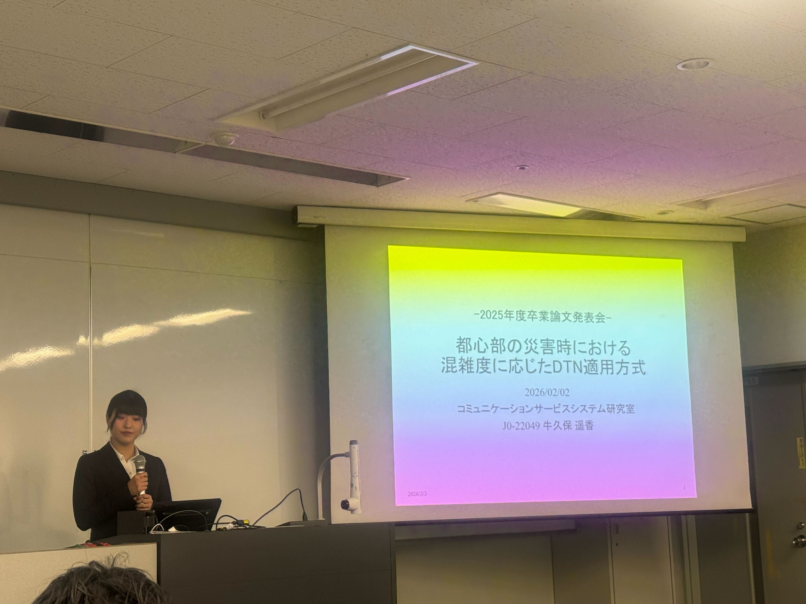

卒業研究発表
都心部の災害時における混雑度に応じたDTN適用方式
災害時には基地局障害や停電により、既存ネットワークが機能低下する可能性があります。 そこで、端末同士が基地局を介さずにデータを蓄積・運搬・転送するDTNに着目しました。
一方で、都心部のように人が多い環境では、送受信回数の増加や通信資源の消費が課題となります。
ネットワーク混雑度に対する高重要度データの伝搬特性を評価し、 より効率的なDTN制御を実現することを目的としました。
災害時データを高重要度データと低重要度データに分類し、 高重要度データを優先的に広めるMATOCに着目しました。
西新宿を想定した格子状道路において、ノード密度を変化させながら、 高重要度データがエリア内の90%のノードに到達するまでの時間を評価しました。